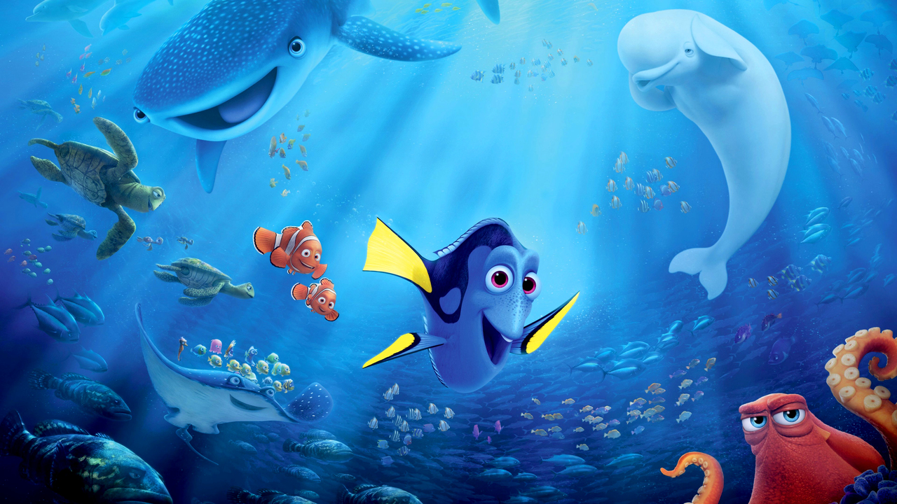

About Dory
Dory is very optimistic and kind but a ditzy and forgetful fish. This is because she suffers from short-term memory loss. However, she has a heart of gold and was willing to go full lengths to help Marlin find his son (even though she can never remember his name).
Dory and her friends
Dory's Characteristics
- She is blue
- She has yellow fins
- She has a bad memory but a good heart
Dory's friends
Dory is good at making friends! Click on the links below to read more about them